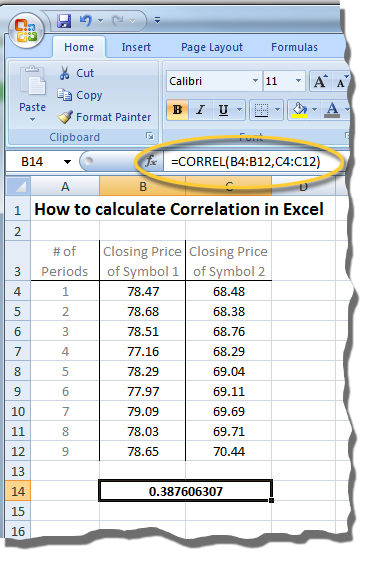
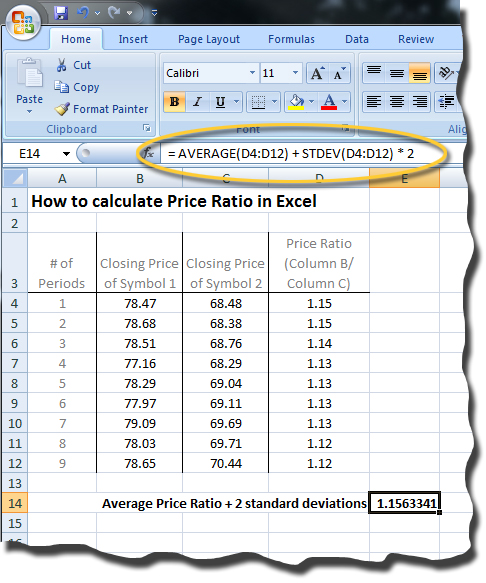
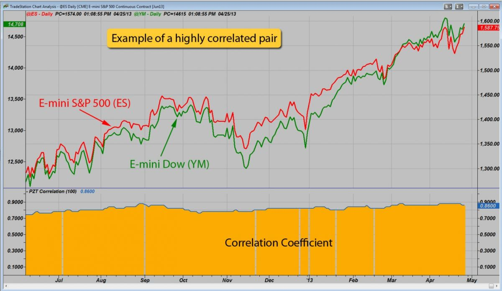
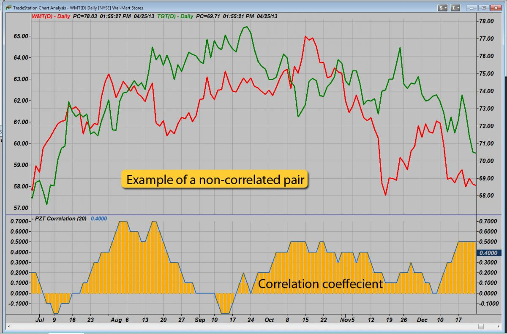
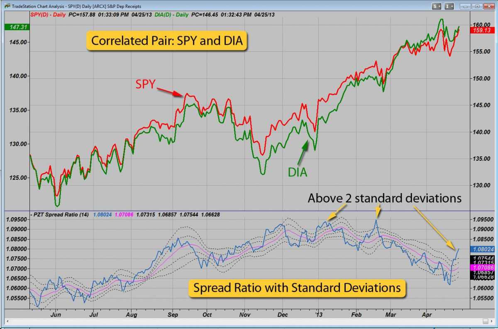
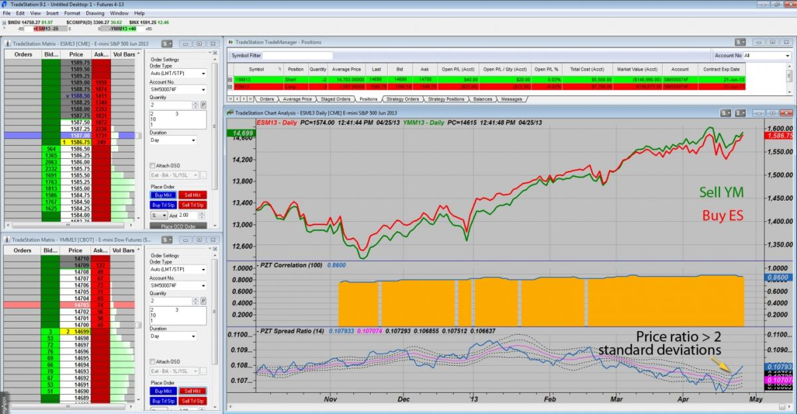

Pairs Trading: Introduction
Pairs trading is a market-neutral trading strategy that matches a long position with a short position in a pair of highly correlated instruments such as two stocks, exchange-traded funds (ETFs), currencies, commodities or options. Pairs traders wait for weakness in the correlation, and then go long on the under-performer while simultaneously going short on the over-performer, closing the positions as the relationship returns to its statistical norm. The strategy’s profit is derived from the difference in price change between the two instruments, rather than from the direction in which each moves. Therefore, a profit can be realized if the long position goes up more than the short, or the short position goes down more than the long (in a perfect situation, the long position will rise and the short position will fall, but this is not a requirement for making a profit). It is possible for pairs traders to profit during a variety of market conditions, including periods when the market goes up, down or sideways, and during periods of either low or high volatility.
Pairs trading’s origin is generally credited to a group of computer scientists, mathematicians and physicists assembled by Wall Street’s Morgan Stanley & Co. in the early to mid-1980s. The team, which included computer scientists Gerry Bamberger and David Shaw, and quant trader Nunzio Tartaglia, was brought together to study arbitrage opportunities in the equities markets, employing advanced statistical modeling and developing an automated trading program to exploit market imbalances.
Central to their research was the development of quantitative methods for identifying pairs of securities whose prices exhibited similar historical price movements, or that were highly correlated. While the team’s resulting black box was traded successfully in 1987 – the group made a reported $50 million profit for Morgan Stanley – the next two years of trading saw poor enough results that in 1989 the group disbanded.
Over the years, pairs trading has gained modest attention among individual, institutional and hedge fund traders as a market-neutral investment strategy. This is largely due to the advent of the Internet and advancements in trading technology. These two factors have helped level the playing field for individual investors, making real-time market data and powerful tools both available and affordable to more than just the institutional traders. True, the large hedge funds and institutional traders still have advantages (for example, robust proprietary systems and economies of scale). However, today’s market participants – whether retails traders or a team of highly-skilled mathematicians in a quant shop – have access to real-time financial market data, direct access trading platforms, advanced computer modeling and the ability to automate complex trading strategies.
Using technology - as well as drawing on fundamentals, probabilities, statistics and technical analysis - pairs traders attempt to identify relationships between two instruments, determine the direction of the relationship and execute trades based on the data presented. Here, we introduce pairs trading, market-neutral investments, arbitrage and provide an example of a pairs trade.
Pairs Trading: Market Neutral Investing
The concept of market-neutral investing is relevant because pairs trading is a type of market-neutral strategy. Joseph G. Nicholas, founder and chairman of HFR Group, wrote in his 2000 book “Market Neutral Investing: Long/Short Hedge Fund Strategies”: “Market-neutral investing refers to a group of investment strategies that seek to neutralize certain market risks by taking offsetting long and short positions in instruments with actual or theoretical relationships. These approaches seek to limit exposure to systemic changes in price caused by shifts in macroeconomic variables or market sentiment.”
Market-neutral investing is not a single strategy. Numerous market-neutral strategies include:
- Convertible arbitrage
- Equity hedge
- Equity market neutral
- Fixed-income arbitrage
- Merger arbitrage
- Mortgage-backed securities arbitrage
- Relative value arbitrage
- Statistical arbitrage (“StatArb”).
The various market-neutral strategies invest in different asset types; for instance, convertible arbitrage takes long positions in convertible securities and short positions in common stock. As another example, merger arbitrage takes long and short positions in the stocks of companies involved in mergers. Market-neutrality can be achieved either at the individual instruments level or at the portfolio level. While the strategies are very different, both in terms of assets and methodology, they all fall under the market-neutral umbrella. This is because each derives returns from the relationship between a long and a short component – either at the individual instruments level or at the portfolio level.
How market-neutral relates to pairs trading
Because one position is taken in conjunction with another position to reduce directional exposure, market-neutral strategies often provide a hedge against market risk. In this manner, exposure to the market is exchanged for exposure to the relationship between the long and short positions. This does not imply that market-neutral investing is risk-neutral or even risk-free (it is neither); however, the risks are different than those associated with directional, long-only investing. A market-neutral approach provides an alternative and uncorrelated source of returns when used as part of (but not as a substitute for) an overall investment strategy.
Pairs traders limit directional risk by going long on one stock (or other instrument) in a particular sector or industry, and pairing that trade with an equal-dollar-value (or dollar neutral) short position in a correlated stock (for example long $10,000 on stock A and short $10,000 on stock B), typically within the same sector or industry. Because it does not matter which direction the market moves, directional risk is mitigated. Profits depend on the difference in price change between the two instruments, regardless of the market’s direction, and are realized through a gain in the net position.
Pairs Trading: Correlation
Correlation is a term from linear regression analysis that describes the strength of the relationship between a dependent variable and an independent variable. Central to pairs trading is the idea that if the two stocks (or other instruments) are correlated enough, any changes in correlation may be followed by a reversion to the pair’s mean trend, creating a profit opportunity. For example, stock A and stock B are highly correlated. If the correlation weakens temporarily – stock A moves up and stock B moves down – a pairs trader might exploit this divergence by shorting stock A (the over-performing issue) and going long on stock B (the under-performing issue). If the stocks revert to the statistical mean, the trader can profit.
The importance of correlation
Correlation measures the relationship between two instruments. We can see from Figure 1 that the e-mini S&P 500 (ES, in red) and e-mini Dow (YM, in green) futures contracts have prices that tend to move together, or that are correlated.
{kind=link}
Figure 1 This daily chart of the ES and YM e-mini futures contracts shows that prices tend to move together. Image created with TradeStation.
Remember, pairs traders attempt to:
- Identify relationships between two instruments;
- Determine the direction of the relationship; and
- Execute trades based on the data presented.
The correlation between any two variables – such as rates of return or historical prices – is a relative statistical measure of the degree to which these variables tend to move together. The correlation coefficient measures the extent to which values of one variable are associated with values of another. Values of the correlation coefficient range from -1 to +1, where:
- Perfect negative correlation (-1) exists when the two securities move in opposite directions (i.e., stock A moves up while stock B moves down);
- Perfect positive correlation (+1) exists if the two securities move in perfect unison (i.e., stock A and stock B move up and down at the same time); and
- No correlation (0) exists if the price movements are completely random (stock A and stock B go up and down randomly).
Perfect negative correlation No correlation Perfect positive correlation
Pairs traders seek instruments whose prices tend to move together; in other words, whose prices are correlated. In reality, it would be difficult (and highly improbable) to achieve sustained perfect positive correlation with any two securities: that would mean prices exactly mimicked one another. Instead, pairs traders look for securities with a high degree of correlation so that they can attempt to profit when prices behave outside this statistical norm. Correlations of 0.8 or above are often used as a benchmark for pairs traders (a correlation less than 0.5 is generally described as weak). Ideally, good correlation presents over multiple time frames.
Why is correlation important to pairs trading? If the two instruments were not correlated to begin with, any divergence and subsequent convergence in price might, in general, be less meaningful. As an example, let’s consider a main road along a river. In general, the road follows the river very closely. Occasionally, the road must diverge away from the river due to terrain or development (comparable to the “spread” in price). Each time this happens, however, the road eventually reverts to its spot parallel to the river.
In this example, the road and the river have a correlated relationship. If we compare the river to another nearby dirt road, however, with no definable correlation to the river (i.e., their movements are completely random), it would be futile to predict how the two would behave relative to one another. The positive correlation between the main road and the river, however, is what makes it reasonable to anticipate that the main road and the river will eventually reunite. The same logic holds true for pairs trading: by identifying correlated securities, we can look for periods of divergence, try to figure out why price is separating and attempt to profit through convergence.
Note: A different approach is to attempt to profit through additional divergence (referred to as divergence trading). Here, we will focus on strategies that attempt to profit through convergence, or a reversion to the mean (known as convergence trading).
Determining correlation
The first step in finding suitable pairs is to look for securities that have something in common, and that trade with good liquidity and can be shorted. Because of similar market risks, competing companies within the same sector make natural potential pairs and are a good place to start. Examples of potentially correlated instruments might include pairs such as:
- Coca-Cola and Pepsi
- Dell and Hewlett-Packard
- Duke Energy and Allegheny Energy
- E-mini S&P 500 and E-mini Dow
- Exxon and Chevron
- Lowe’s and Home Depot
- McDonald’s and Yum! Brands
- S&P 500 ETF and SPDR DJIA ETF.
Next, we need to determine how correlated they are. We can measure this using a correlation coefficient (described above), which reflects how well the two securities are related to each other. The specific calculations behind the correlation coefficient are somewhat complicated and fall outside the scope of this tutorial; however, traders have several options for determining this value:
- Most trading platforms provide some type of technical indicator that can be applied to the two securities, performing the math functions automatically and plotting the results on a price chart.
- Traders who do not have access to this particular technical indicator can perform an Internet search “correlation coefficient calculator” to access online tools that perform the calculations.
- Traders can enter the price data in Excel and use its “CORREL” function to perform the calculations, as shown in Figure 2:

{kind=link}
Figure 2 Excel can be used to calculate a pair’s correlation coefficient.
After the correlation coefficients have been determined, the results can be used as a filter to find the pairs that show the most potential.
Price ratio
Once we find correlated pairs, we can determine if the relationship is mean reverting; that is, when price does diverge, will it revert to its statistical norm? We can establish this by plotting the pair’s price ratio. Like the correlation coefficient, most trading platforms come equipped with a technical indicator (perhaps named price ratio or spread ratio) that can be applied to a chart to plot the price ratio of two instruments, which essentially provides a visible and numeric representation of the price of one instrument divided by the price of the other:
Price ratio = Price of Instrument A / Price of Instrument B
If traders do not have access to this type of analysis in a trading platform, the price data can be entered into Excel, as shown in Figure 3:

{kind=link}
Figure 3 Excel can be used to calculate a pair’s price, or spread, ratio.
If we add standard deviation lines, we can gain insight into how far away from the mean the price ratio moves. Standard deviation (calculated as the square root of variance) is a statistical concept that illustrates how a specific set of prices is divided or spread around an average value. A normal probability distribution can be used to compute the probability of occurrence of any particular outcome; in normal distribution:
- 68.26 percent of the data will fall within +/- one standard deviation of the mean;
- 95.44 percent of the data will fall within +/- two standard deviations of the mean;
- 99.74 percent of the data will fall within +/- three standard deviations of the mean.
Applying this data, we wait until the price ratio diverges “x” number of standard deviations – such as +/- two standard deviations – and enter a long/short trade based on the information (the number of standard deviations selected is determined through historical analysis and optimization). If the pair reverts to its mean trend, the trade can be profitable.
Events that trigger weakness in correlation
When two instruments are highly correlated, certain events can cause a temporary weakness in correlation. Because many factors that would cause price movements would affect correlated pairs equally (such as Federal Reserve announcements or geopolitical turmoil), events that trigger weakness in correlation are generally limited to things that primarily impact only one of the instruments. For example, divergence can be the result of temporary supply and demand changes within one stock, such as when a single large investor changes positions either through buying or selling in one of the securities represented in a pair.
Note: All U.S.-listed companies must notify the listing exchange (e.g., NYSE or Nasdaq) about any corporate developments that have the potential to affect trading activity in that stock before making the announcement public. Examples of developments include:
- Changes related to the company’s financial health;
- Restructuring or mergers;
- Significant information about its products (whether positive or negative);
- Changes in key management; and
- Legal or regulatory issues that could affect the company’s power to conduct business.
U.S. stock exchanges are authorized to issue a trading halt – a temporary suspension of trading activity – based on their evaluation of an announcement. In general, the more likely the announcement is to have an effect of the stock’s price, the greater the likelihood that the exchange will call for a trading halt until the news is disseminated to the public.
Additionally, if a U.S.-listed stock’s price changes significantly within any five-minute period, a short-term trading pause may be issued. A pause lasts five minutes unless there is still a significant imbalance between the security’s buy and sell orders after that period. The price moves that trigger a pause are:
- 10 percent price movement for securities in the S&P 500, Russell 1000 Index and some exchange-traded products;
- 30 percent price movement for other stocks priced $1 or above; or
- 50 percent price movement for other stocks priced below $1.
Weakness can also be caused by internal developments – or events that occur within companies – such as mergers and acquisitions, earnings reports, dividend changes, the development/approval of new products, and scandal or fraud. Particularly if an internal event is unexpected, the involved company’s stock price can experience rapid and dramatic price fluctuations. Depending on the event, the price change can be very short-term or can result in a trend change.
Arbitrage and Pairs Trading
At a basic level, arbitrage is the process of simultaneously buying and selling the same (or equivalent) securities on different markets to take advantage of price differences and make a profit. The price differences can be the result of market inefficiencies, pricing mismatches and even currency exchange rates. An arbitrageur, for example, could buy stock ABC for $50 on the New York Stock Exchange (NYSE), while at the same time, sell it for $51 on the London Stock Exchange (LSE), profiting $1 per share. Since arbitrageurs attempt to benefit from very small price moves, they typically must enter large positions to make substantial profits.
Before advancements in technology, it was possible for well-resourced arbitrageurs to capitalize on these arbitrage opportunities. Today the markets are a more level playing field, and as more people have real-time access to market data and with increased transparency, many of these pure arbitrage opportunities no longer exist.
While pure arbitrage is risk-free and based on actual pricing flaws, other forms of arbitrage are speculative in nature and based on perceived or implied pricing flaws: an investor’s perception that a price relationship has deviated from its historical average in a significant way. Pairs trading shares characteristics with two such types of arbitrage: relative value arbitrage and statistical arbitrage:
Relative value arbitrage
This type of arbitrage refers to simultaneous buying and selling of related instruments, whereby the trader’s profit depends on a favorable change in the relationship between the instruments’ prices. This type of arbitrage involves taking offsetting positions (long/short) in securities that are historically or mathematically interrelated, but where the relationship is temporarily misaligned. Investors can realize a profit when the relationship between the securities reverts to its norm.
Relative value arbitrage approaches involve several different investment strategies, including:
- Capital structure arbitrage
- Convertible arbitrage
- Equity statistical arbitrage
- Fixed-income arbitrage
- Merger arbitrage
- Options and warrants
- Pairs trading.
Statistical arbitrage
Pairs trading can also fall under statistical arbitrage (“StatArb”), which is similar to relative value arbitrage. Relative value arbitrage and StatArb differ in terms of time frame, type of analysis and method of order entry. As relative value arbitrage, pairs trading can exist in almost any time horizon, using fundamental and/or technical analysis, and can be manually traded. Conversely, as statistical arbitrage, pairs trading exists in the very short term, relying on computer-driven modeling for analysis, and taking frequent trades (dozens or even hundreds each trading session) that are executed automatically by a computer (i.e., an automated strategy).
Pairs trading, then, has elements of both relative value and statistical arbitrage, and is, in fact, often referred to as either relative value arbitrage or statistical arbitrage. Regardless of how pairs are selected (either by fundamental or technical analysis), or how they are traded (manual-based or computer-driven), a pairs trading strategy is centered on the concept of mean reversion: that weakness in correlation can occur in the short-term, but will be corrected as prices revert back to the historical mean.
Fundamental and Technical Analysis for Pairs Trading
Pairs traders employ either fundamental or technical analysis, or a combination of the two, to make decisions regarding which instruments to pair, and when to get in and out of trades. Many pairs traders apply technical analysis techniques and then confirm the findings using fundamentals. This extra “layer” of analysis can be used simply to ensure that the trade “makes sense”. For instance, if all technical analysis points to taking a long position in stock ABC and a short in XYZ, but the fundamentals show that stock ABC will have a weak earnings report, the position may need to be reconsidered.
Fundamental factors
Fundamental analysis examines related economic, financial and other qualitative and quantitative factors to evaluate a security’s value, and to determine which security will perform better in the short-term. Fundamental analysts may consider a number of growth and value factors when identifying opportunities for pairs trading. These include (but are not limited to):
- Changes in operating margins
- Discounted cash flow
- Dividend discount model
- Dividend yield
- Excess cash flow
- Float
- Price/earnings to growth (PEG ratio)
- Price-earnings ratio (P/E ratio)
- Price-to-book ratio (P/B ratio)
- Price-to-cash-flow ratio (price/cash)
- Price-to-sales ratio (price/sales)
- Return on equity
- Total assets over sales.
Technical factors
Technical analysis, on the other hand, is a method of evaluating securities by analyzing statistics generated by market activity; in particular, historical price and volume. Rather than attempting to measure a security’s intrinsic value, technical analysis seeks to identify patterns to predict future price movements.
Pairs traders call on a variety of tools and technical indicators to identify trading opportunities. The technical analyst may use, for example:
- Chart patterns (i.e., candlestick charting)
- Commercial indicators
- Moving averages
- On-balance volume (OBV)
- Relative strength index (RSI)
- Stochastics
- Support and resistance
- Trend lines.
Other metrics may be useful to pairs traders as well. Consider beta, for example. Market risk can be measured by beta: a measure of a stock’s volatility relative to the market. The market has a beta of 1.0, and each individual stock is ranked based on how much it deviates from the market. If a stock swings more than the market over time, it will have a beta above 1.0; conversely, if a stock moves less than the market, its beta will be less than 1.0. High-beta stocks are considered riskier but tend to provide the potential for higher returns. Low-beta stocks have less risk, accompanied by lower potential returns. Ideally, the securities in a pairs trade have betas that are stable over time.
Deciding to implement a fundamental or technical approach is a matter of personal preference. Many pairs traders, and in particular short-term traders, prefer a technical approach. Some conduct technical analysis and look for confirmation using certain fundamentals, while others may use fundamental analysis exclusively. As with any investment strategy, finding the right combination of analysis tools and methodology takes research, historical modeling and testing.
Pairs Trade Example
As with nearly any investment, taking a pairs trade involves more than just hitting the buy and sell button. Here we examine, in very broad terms, the steps required to enter and exit a pairs trade.
Assemble a list of potentially related pairs
Just as long-only stock traders scan the markets for suitable securities, a pairs trader must start with a list of potentially related pairs. This entails conducting research to find securities that have something in common – whether the relationship is due to sector (such as the auto sector) or to asset (for example, bonds). While any random pair could theoretically be correlated, it is more likely that we will find correlation in securities that have something in common to begin with.
Determining the correlation level
The next step acts as a filter, or a means by which we can reduce the number of potential pairs in our quiver. One way is to use a correlation coefficient to determine how closely two instruments are related. Figure 4 shows a daily chart of the e-mini S&P 500 contract (in red) and the e-mini Dow contract (in green). Below the price chart is an indicator that shows the correlation coefficient (in yellow). We can see from the chart that during the time period evaluated, the ES and YM are highly correlated, with values hovering around 0.9. We will keep the ES/YM pair on our list of potential pairs candidates.

{kind=link}
Figure 4 The e-mini S&P 500 contract (in red) and the e-mini Dow (in green) show potential as a pairs trade. Visual confirmation of price, backed by quantitative results from the correlation coefficient (in yellow), show that the two instruments are highly correlated. Image created with TradeStation.
Another chart, shown in Figure 5, illustrates a pair that is not correlated. In this example, a daily chart of Wal-mart (in red) and Target (in green) shows little correlation between the two instruments, despite the fact that they “have something in common”. Here, the correlation coefficient (in yellow) demonstrates that the relationship is scattered, ranging from high values of about 0.7 to values below zero, indicating a lack of correlation. In this case, we can remove the WMT/TGT pair from our list of potential pairs candidates.

{kind=link}
Figure 5 This daily chart of WMT (in red) and TGT (in green) shows that this is not an ideal pair (at least not during the time period tested). A visual review of prices, confirmed by results from the correlation coefficient (in yellow) indicate a lack of correlation between the two stocks. Image created with TradeStation.
Use modeling to determine specific rules
An ongoing component of the process is to research and test trading ideas and determine absolute methods of evaluating pairs and defining divergence. Traders will have to answer questions like What constitutes “enough” divergence from the trend to initiate a trade? and How will this be evaluated (for example, using data from a price ratio indicator with standard deviation overlays). In general, traders should focus on quantifiable data: i.e., “I will enter a pairs trade when price ratio exceeds two standard deviations.” Figure 6 shows two ETFs – SPY (in red) and DIA (in green) – on a daily chart. Below the price chart is a spread ratio indicator (in blue), with a +/- one and two standard deviation overlay (dotted lines). The mean appears in pink.

{kind=link}
Figure 6 A daily chart of the ETFs SPY (in red) and DIA (in green). A spread ratio indicator appears below the price chart, along with a standard deviation overlay. Image created with TradeStation.
Determining position sizing
Many traders use a dollar-neutral approach to position sizing when trading pairs. Using this method, the long and short sides of the trade are entered with equal dollar amounts. For example, a trader wants to enter a pairs trade with stock A, trading at $100 per share, and stock B, trading at $50 per share. To achieve a dollar-neutral position, the trader will have to purchase two shares of stock B for every one share of stock A. For example:
- Long 100 shares of stock A = $10,000; and
- Short 200 shares of stock B = $10,000.
Buy the underperformer and sell the overperformer
Once the trading rules are met, the trader will buy the underperforming security and simultaneously sell the overperforming security. In Figure 7, the spread ratio has exceeded two standard deviations, and a trading setup has occurred in our ES/YM pair. Here, a long position is entered with two ES contracts, and a simultaneous short position of two contracts is taken in the YM.

{kind=link}
Figure 7 A trade is opened in the ES/YM pair. The order entry interface appears on the left side of the screen (one order entry box for the ES; one for the YM). The horizontal red and green lines at the top show the real-time P/L for each position. Image created with TradeStation.
Use sound money management principles to exit the trade
As with most investments, the timing of the exit is critical to the success of the trade. It is important to apply money management principles to pairs trades, including the use of protective stop-loss orders and profit targets. Optimal levels are typically determined through extensive historical modeling. Figure 8 shows the ES/YM trade, exited using a conservative net profit level.

Figure 8 The ES/YM trade is exited with a small net profit. Image created with TradeStation.
Despite exhaustive research, modeling and testing, a pairs trading strategy may fail to live up to expectations. Two risks that traders have are model risk and execution risk, introduced in the next section.
Pairs Trading: Risks
Although pure arbitrage is essentially a risk-free strategy, pairs trading (either as relative value arbitrage or StatArb) involves certain risks, including model risk and execution risk.
Model risk
As with nearly any investment that involves risk, pairs traders are exposed to model risk: a type of risk that occurs when the model used to create the strategy does not perform as expected. This can be due to a number of factors ranging from inaccurate research to flawed logic or calculations. The now-famous debacle that occurred at Long Term Capital Management (LTCM), for example, was attributed to model risk.
LTCM was a large hedge fund led by two Nobel Prize-winning economists and Wall Street traders. The firm’s primary strategy, based on sophisticated computer modeling, was to make convergence trades – pairs trades with a long position in a “cheap” security and short position in a “rich” one. Because they were looking for small price movements, leverage was a key component of LTCM’s strategy. At the start of 1998, the fund had $5 billion in equity and had borrowed more than $125 billion – a 30:1 leverage factor. LTCM believed the positions were very correlated, and thus, exposed to minimal risk.
Following Russia’s devaluation of the ruble (in which LTCM was highly leveraged in government bonds) and subsequent flight to quality, LTCM suffered massive losses of $4.6 billion and was in danger of defaulting on its loans. The fund was eventually bailed out with the hold of the Federal Reserve to thwart a global financial crisis.
Even the most carefully executed modeling can be flawed due to inaccurate research, unsound logic, changing circumstances and misinterpreted results.
Execution risk
This type of risk is another factor that can negatively impact the return for a pairs trade. Execution risk refers to the possibility that the strategy will not be executed as planned. For example, a trader may experience slippage in price or may receive a partial fill on an order, resulting in reduced profit potential. Slippage occurs when the price a trader receives for an order is less favorable than the one expected. For example, if we are going long on stock ABC and the current market price is $50.15, we might expect (or, more accurately, hope for) that price. We might get filled, however, at $50.25 due to slippage, taking an automatic 10-cent loss (per share) on the trade.
A trader might also receive a partial fill on an order. This occurs when a single order – for example, 1,000 shares of stock ABC – is broken down and filled at different prices. This particular trade might have 500 shares filled at $50.25 and the other 500 filled at $50.35 – or not at all if no shares are available.
Particularly if the pairs trading strategy relies on small price movements, a partial fill can significantly and negatively impact the potential for profits.
Disadvantages of Pairs Trading
Aside from the risks associated with pairs trading, there are a number of disadvantages to this investment technique of which traders should be aware. Perhaps the most obvious disadvantage is that each trade necessitates twice the commissions and fees. If an investor were to simply go long, he or she would pay one commission to enter and one to exit the trade. A pairs trader, however, must pay two commissions to enter and two commissions to exit each trade. Depending on the particular strategy employed, this can add up quickly. Commissions should be factored into any historical modeling to determine if the strategy can, in fact, make a profit.
The outcomes of execution risk are also a disadvantage in pairs trading. Slippage, partial fills and bid-ask spreads can reduce profits. The bid-ask spread is the amount by which the ask price exceeds the bid, or the difference in price between the price a buyer is willing to pay for a security (bid), and the and the price a seller wants for that security (ask). The trading volume of the securities greatly affects the bid-ask spread; instruments that trade under higher volume tend to have smaller bid-ask spreads, while those that are thinly traded often have larger bid-ask spreads.
Because many pairs trading strategies rely on exploiting very small price changes, the technique may be most efficient for traders who are well-capitalized and who have the ability to enter large positions (i.e., lots of trading capital and willingness to leverage positions). True to nearly any style of investing, smaller traders may need to take a different approach (and employ a different strategy) than the large, institutional pairs traders.
Advantages of Pairs Trading
Pairs trading is a market-neutral strategy that boasts several advantages:
Controlled risk
Central to pairs trading is the matching of a long position with a short position in a related, or correlated, instrument. This essentially creates an automatic hedge, where one leg of the trade acts as a hedge against the other. In this manner, risk is somewhat controlled. Consider an example where a trader is long on stock ABC and short on stock XYZ in a pairs trade. Since the two stocks are correlated, if the entire sector takes a hit, the price may fall for both stocks. In this example, any losses sustained through the long position will be mitigated by the gain in the short position. Therefore, even though the entire sector is down on the day, the trader’s net position may remain neutral because of the low correlation to the market averages.
Profit regardless of market direction
Another attractive feature of pairs trading is the ability to profit whether the market is going up, down or sideways. This is because the strategy does not depend on market direction, but on the relationship between the two instruments. To clarify, long-only traders (who are bullish) can only profit from rising markets. Short-only traders (who are bearish) profit when the markets are falling. To a pairs trader, the market direction does not matter; it’s the relative performance of the two instruments that determines each trade’s outcome.
No directional risk
Directional risk involves exposure to the direction of price movements. For example, a long position is exposed to the risk that stock prices will move down. In pairs trading, a second instrument acts as a hedge against the first, thereby removing the directional risk. Because profits depend on the difference in price change between the two instruments, rather than from the direction in which each moves, directional risk is removed.
Smaller drawdowns
A drawdown is a peak-to-trough decline in an open investment’s value. For example, if a trade reached unrealized profits of $10,000 one day, and the next day fell to $6,000, that would indicate a $4,000 drawdown. While drawdowns do not necessarily dictate whether a trade will ultimately be a winner, managing drawdowns is important because it’s money that is at risk of being lost. In addition, a strategy’s maximum expected drawdown (based on historical modeling) will determine how much money a trader needs to allocate to that particular strategy. For example, if a strategy has a maximum drawdown of $5,000, we would need access to at least $5,000 to cover any potential losses. Because losses from a losing position are tempered by gains in a winning position, pairs trading generally involves smaller net drawdowns.